B y M1 · Comparación con la aplicación
B · Comparar y agregar organiza el catálogo en filas con atributos alineados. M1 · Filas legibles adapta el flujo a una pantalla completa en el teléfono: categorías, características y resultados.
Las imágenes de referencia son los mockups aprobados. Las capturas muestran la aplicación local con cuentas y datos de prueba en una base PostgreSQL aislada, tras la revisión funcional y visual.
Un solo panel cambia de categorías a características. Las columnas dependen de la categoría; en móvil sus valores tienen etiquetas. Las cantidades siguen a mano, y cada útil conserva sus unidades, notas y opciones de edición.
Escritorio · B

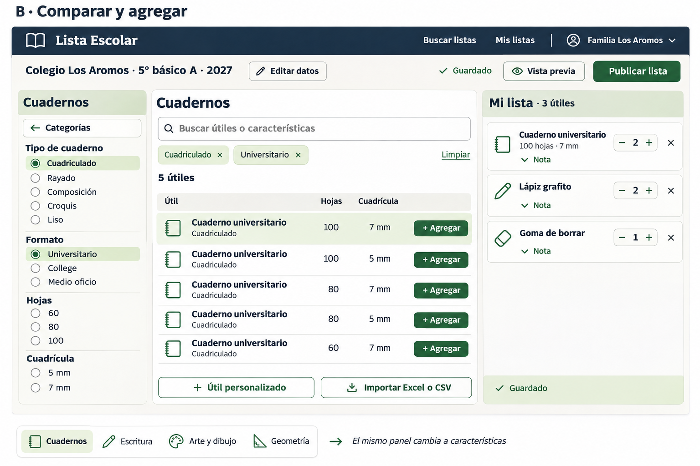

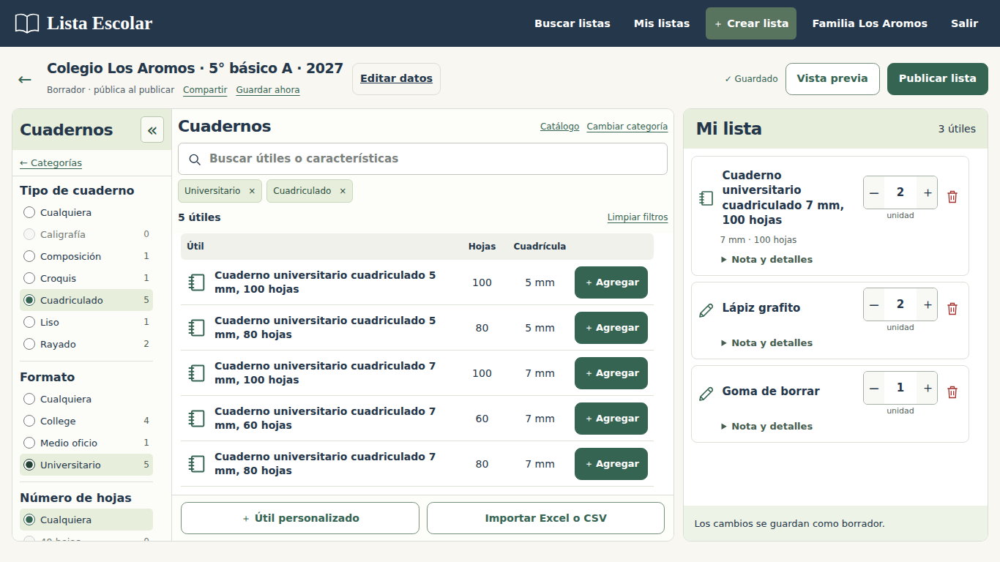
El diseño conserva los nombres completos, los recuentos de coincidencias, los filtros opcionales y el acceso a importación. El selector inicial de categorías ocupa el mismo panel.

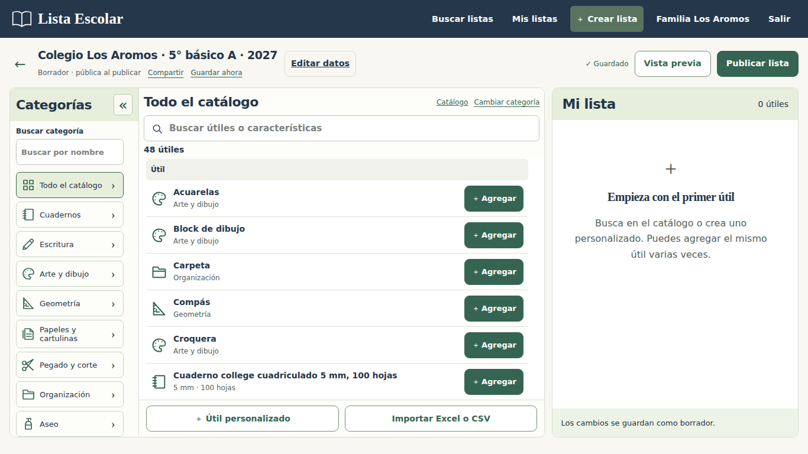

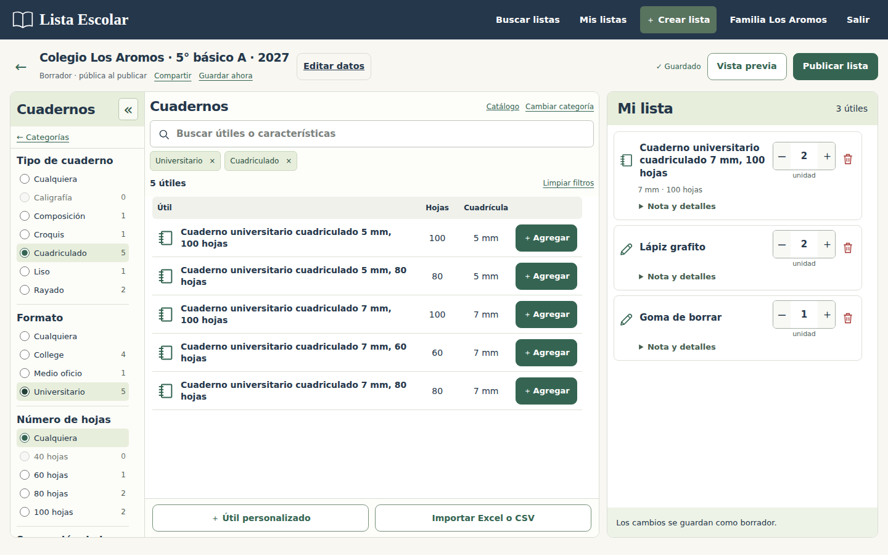
Pantalla mediana · 1024 px

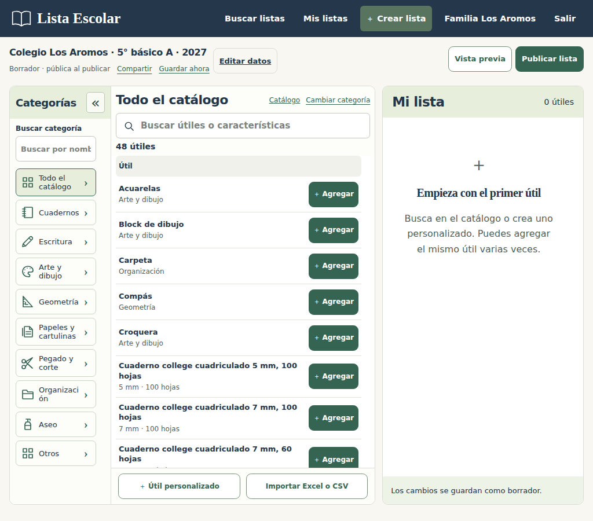

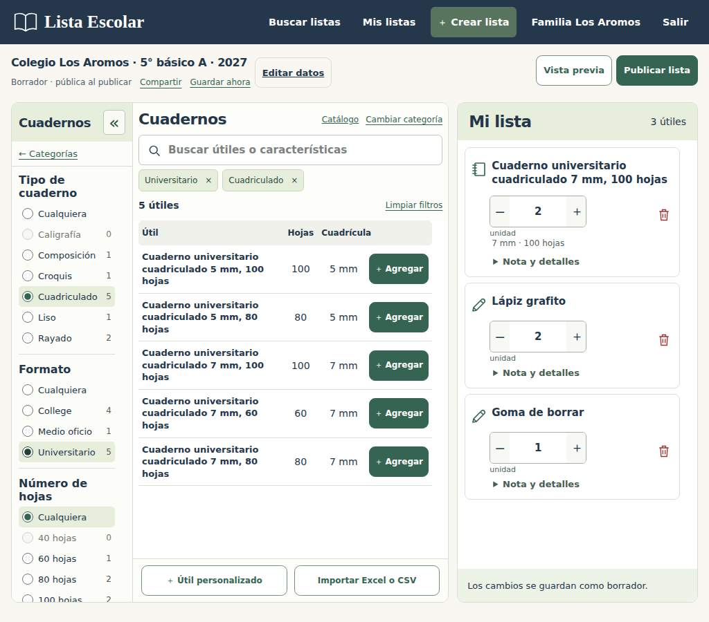
Móvil · M1

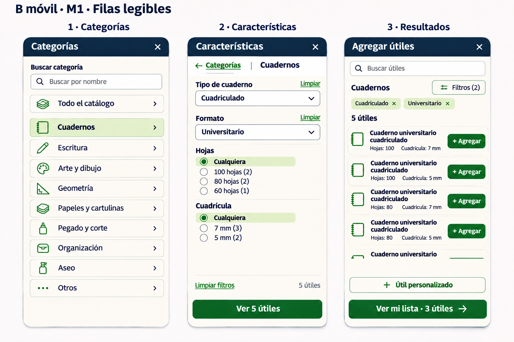

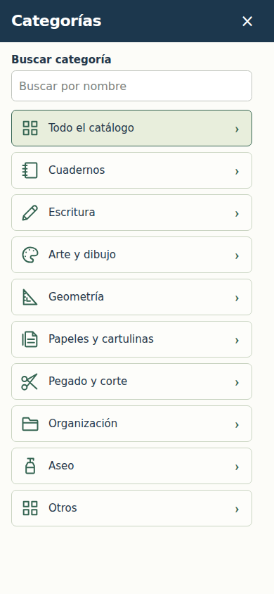

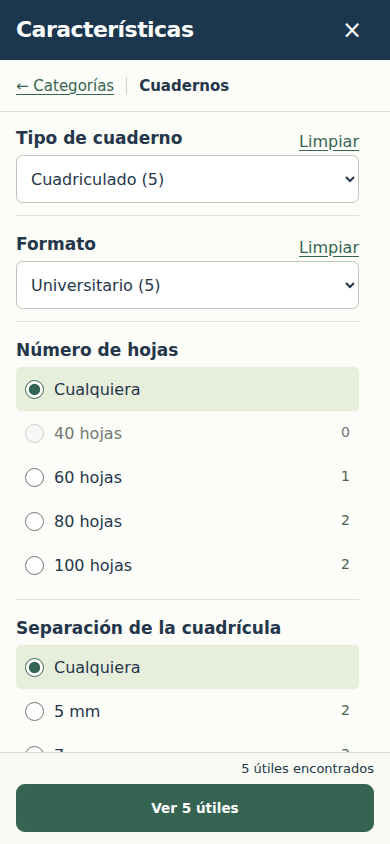

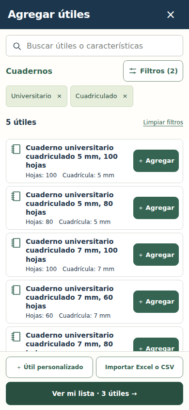
Cada captura representa un momento del mismo flujo. El encabezado indica el estado actual; el botón inferior regresa a los resultados o a la lista.
Móvil estrecho · 320 px

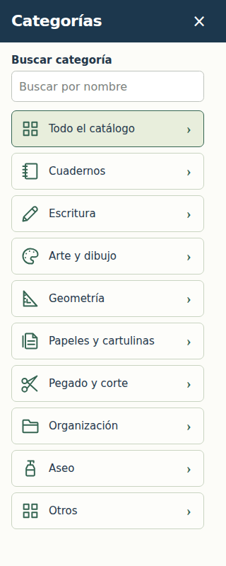

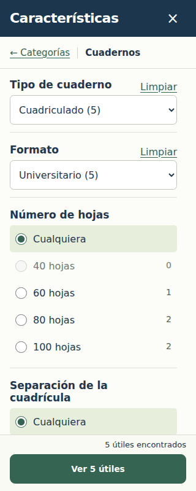

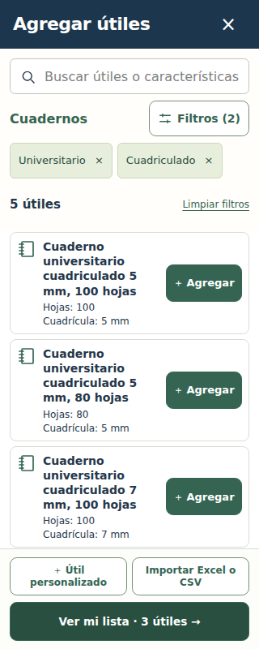
Mi lista · edición compacta

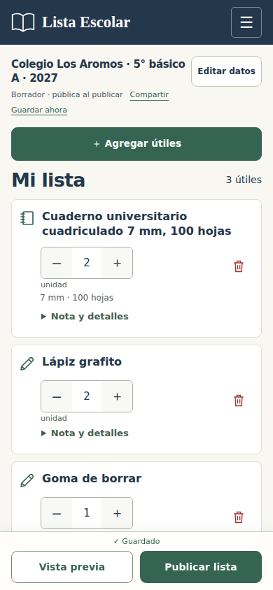

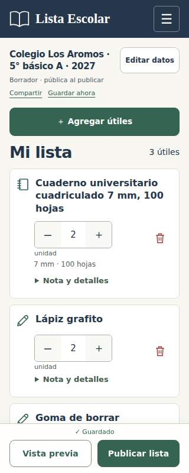
El nombre y la cantidad se editan en cada fila. Nota y detalles permite cambiar la unidad, escribir indicaciones y ordenar los útiles.